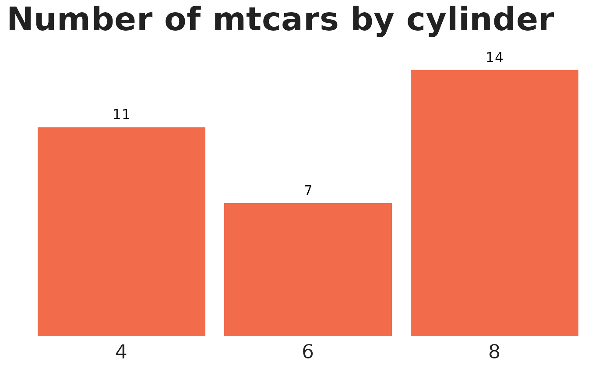
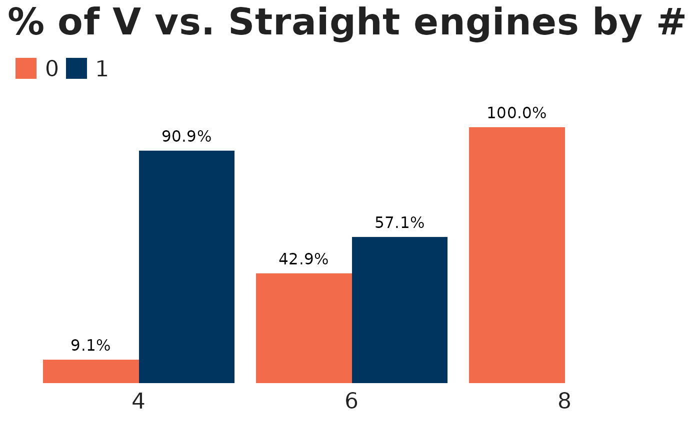

Takes a user supplied data frame and turns the designated column into an N bar chart (uses position dodge from ggplot2).
Usage
bar_chart_counts(
df,
var,
group_var = NULL,
labels = "n",
var_color = "green",
group_colors = NULL,
title = NULL,
var_label = NULL,
digits = 1,
font = "Halyard Display",
font_size = 12
)Arguments
- df
the data.frame to be used in the bar chart
- var
unquoted column name for variable to count
- group_var
(optional) unquoted column name for group variable. If this is specified, you get a 2-variable clustered bar chart. If left blank, a single variable bar chart.
- labels
should labels show the count (
"n") or the percentage ("pct")?- var_color
color for non-grouped charts; set to TNTP green by default. For both this and
group_colors, strings will be tried intntp_colorsautomatically. Soc("red", "green")will get you the official TNTP colors, whilec("red", "brown")will get you base R red and blue.- group_colors
character vector of group colors, if a specific palette is desired
- title
main chart title
- var_label
label for x-axis
- digits
integer indicating the number of decimal places to be used in percentages. In truncating, ties are rounded up, like in MS Excel, i.e., 10.5 and 11.5 become 11 and 12. This is *not* base R's default behavior.
- font
font for chart text; Segoe UI by default
- font_size
size for chart text; set to 12 by default
Examples
# An N bar chart by default
# All examples use font = "sans" to avoid triggering font warnings
mtcars |>
bar_chart_counts(var = cyl,
var_color = "orange",
title = "Number of mtcars by cylinder",
font = "sans")

# Use a grouping variable with custom colors
mtcars |>
bar_chart_counts(var = cyl,
group_var = vs,
group_colors = c("orange", "navy"),
labels = "pct",
title = "% of V vs. Straight engines by # of cylinders",
font = "sans")
